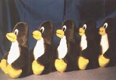

Bookmarks
Andere WWW-Seiten mit verwandten Themen
Zum
Thema ISDN und Linux gibt es noch etliche weitere Adressen, die hilfreich sein
könnten.
- Weitere Anleitungen
- Software rund um ISDN4Linux
- ftp.franken.de (Ursprung)
- ftp.pop.de (Mirror)
- stud.fbi.fh-darmstadt.de (Treiber für itk ix1 micro)
- Patches
- ISDN
- PPP und syncPPP
- diald
- email
- News
- Fax
- Audio
- Standards und Dokumentationen
- ITU (internationale Standards)
- Hardware
- Leute
Copyright © (GPL V 2) 1996
Bernhard Hailer
Letzte Änderung: 24-Feb-97 BeH